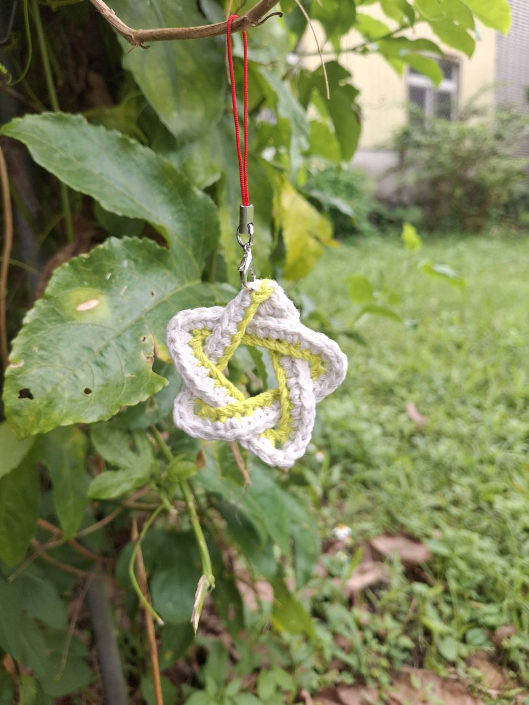
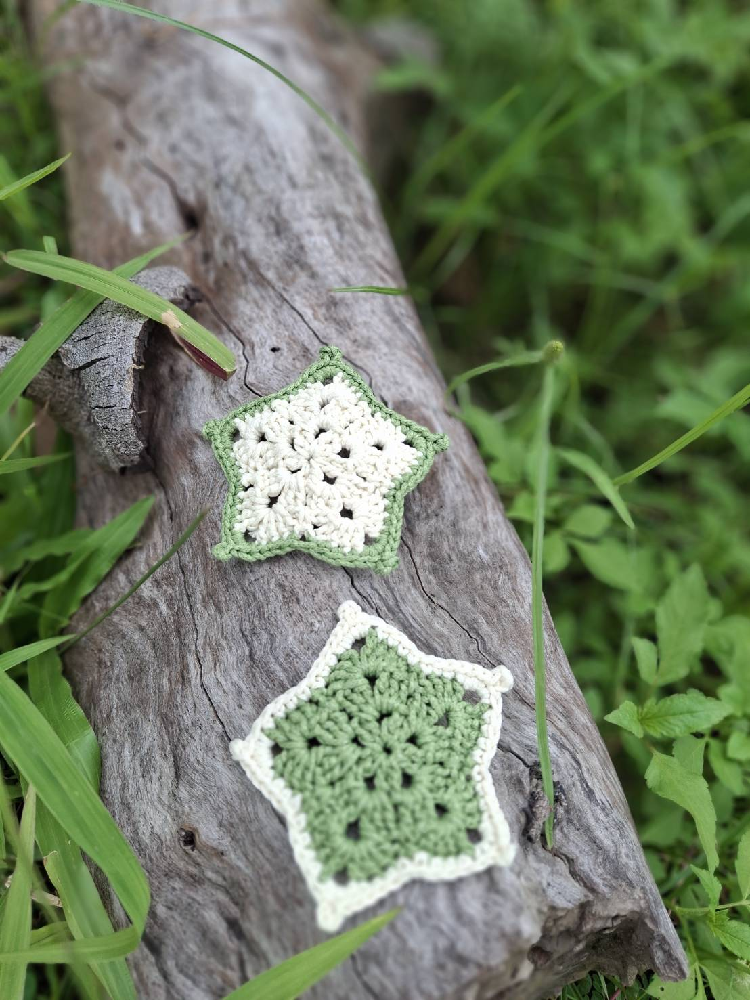

寒露到了，秋天的腳步，也慢慢走向尾聲。
在秋天最後的兩週裡，我們想留一點時間，坐下來，手裡拿著鉤針，一針一線，為自己做一顆小小的星星。
這次，素慧老師會帶著大家一起做鉤針星星，也可以把星星延伸做成一個小小的星星杯墊。
也歡迎有興趣的共學家長一起來坐坐，不一定要很會鉤針，就從一針開始，在秋日裡，陪自己做一件小小的事。
手作作品欣賞

⭐ 鉤針立體星星吊飾

⭐ 星星杯墊
課程與費用資訊
⭐ 上課地點
五芒星星共學園
宜蘭縣三星鄉安農九路 560 號
⭐ 費用說明
場地費：200元
講師費：隨喜
材料包：50元／份
⭐ 星期四下午興趣班
若家裡有做到一半的作品，或一直想完成卻沒時間開始的手作，都可以帶著材料來，老師在一旁陪您慢慢完成！
🧶 手作內容與材料包說明
鉤針星星（可延伸做成星星杯墊）。
素慧老師貼心準備了材料包，讓想為家裡的手足多做一份的家庭，或是當天不方便來參加的家庭，都可以帶回家，找一個安靜的時候慢慢完成。
🎒 準備與溫馨提醒
- 請自備：3～4號鉤針。
- 若手邊沒有也沒關係，素慧老師會帶一些鉤針來，讓大家借用。
- 協會有提供園區花草茶，但需要自備水壺或水杯。
手作老師 ( Faculty )
在手作中找回專注與平靜
素慧 老師
「從小對於手作就特別感興趣，在華德福幼兒園裡，跟孩子一起手作也是特別快樂美好的一件事。」
專業背景與經歷
從事幼教工作 36 年。求學時期家政手作課與幼教科系接觸了更多手作機會。在華德福幼兒園的多年教學中，深感手作帶給孩子與自己的美好連結。自身非常喜歡鑽研新的手作，也樂於與朋友分享這份手作的喜悅。
邀您一起來安農溪畔享受秋日手作時光
秋天快走了，就讓我們用一針一線，把這個季節留下一點點吧。歡迎填寫表單完成報名。